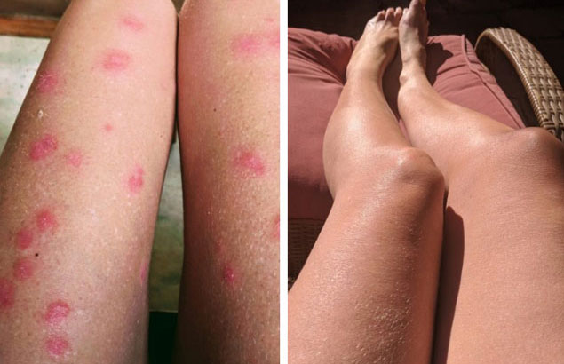
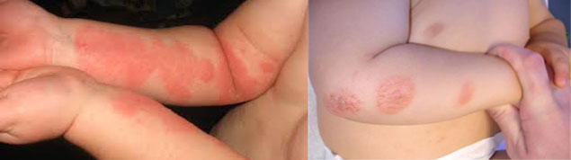

Autor Dita Vachová |
Autor Dita Vachová | Dobrý den!
Ráda bych vám sdělila, milí přátelé, jak jsem vyléčila psoriázu u sebe a své dcery, a jaká metoda léčby nám opravdu pomohla.
Moje nohy před a po léčbě psoriázy
Boláky ze sladkosti
Všechno se to začalo když jsem ještě chodila do mateřské školy. Na rukou jsem objevila zarudnutí. Pak - pod koleny a lokty. Máma si myslela, že vředy mám kvůli tomů, že jím hodně sladkosti, ale sladkého v mém dětství bylo jen málo a hlavně na Vanoce.
Po školních prázdninách, jsem se lépe necítila: zarudnutí pokožky začalo vypadát jako psoriatická ložiska a praskalo to až do krvi, bylo to velmi bolestivé! Doktor řekl, že mám lupenku.
 Nemoc stala mým osudem
Nemoc stala mým osudem
Až do ukončení studia jsem pořád musela používát různé krémy a gely, které mi předepsál lékař, všechny byly založeny na Betamethasonu s glukokortikosteroidy, jinými slovy hormonální léčbu. A to je velmi nebezpečné, úplně oslabuje imunitní systém. Ale co se dá dělat?! Žádná alternativa není.
Mámě pořád něco radili její přátele a přinášela různé masti, máma pořád komunikovala s laboratoří a doktory, ale veškeré úsilí bylo sníženo na nulu, nemoc se pořád opakovala.
Manželství
Vdala jsem se během remise, narodilo se nám dítě. Když se choroba opakovávala, můj manžel, když pochopil že jsem nemocná lupenkou, utekl ode mě. Také obvinil mou mámu, že mu o tom, že jsem nemocná neřekla. Rozvedl se se mnou. Po rozvodu já s maminkou a dcerou přestěhovala se k moři. Myslela jsem, že slunce a mořská voda ovlivní mé zdraví, ale nic se na mém zdravotním stavu nezměnilo. Vrátili jsme se domů.
 Ani moře mě nezachránilo před lupénkou
Ani moře mě nezachránilo před lupénkou
Po celou tu dobu mě moje matka podporovala a pomáhala s domácnosti, prala pro mě, když nebyly žádné moderní pračky. Moje ruce znovu a znovu se pokrývali růžovými plaky a pokožka byla rozpraskana až do krví! Často jsem musela mít obváz, takže moje matka pořád se snažila mi pomoct.
Připravovala jsem saláty, protože masti v lékátnách byli drahé, a mojí pokožků ovlivňovalo vše, co sním: okurky, rajčata - veškeré produkty, které měli šťávu. Samozřejmě, že opravdu jsem si chtěla dietou usnadnit život a uzdravit se.
 Moje ruce před a po ošetření
Moje ruce před a po ošetření
Skoro v depresi
Zvykla jsem si na to, že moje matka byla vždy se mnou - ošetřovala rány, obvázala je, dělala pro mě všechno ... a jsem si zvykla žít s touto nemocí. Ale když moje dcera také onemocněla lupenkou, začal jsem se cítit opravdu depresivně.
Vše co jsem chtěla, tak aby ta nemoc mě a mou dceru navždy opustila. Nejhorší je, že jsme s mámou vyzkoušeli veškeré možné metody léčby, a žádná nebýla tak účinná, aby mě byla schopná zbavit lupenky navždy. Ale když nemoc se objevila u mé dcery byla jsem strašně rozčílena.
Vidět jak se tou ošklivou nemoci trápí moje dceru bylo nesnesitelné ...
Nová naděje
Když u matky v práci na účetním oddělení dozvěděli o mém problému, dostala tak doporučení na video o léčbě psoriázy.Když jsme na obrazovce viděli příznaky lupenky, jaké mám i já rozbrečela jsem se.Slavný vědec, doktor lékařských věd MUDr.Leoš Kadlec prozradil jak se dá vyléčit psoriázu.
Z toho videa jsme se s maminkou, dozvěděly že existuje lék, který neobsahuje hormony a obsahuje jenom přírodní složky. Příravek se nazývá . Výrobci tvrdí, že má kumulativní účinek. Podle profesora tento lék proniká do nižších vrstev epidermisu pokožky a léčí pleť zevnitř.
Po měsici léčby pomáhá dosáhnout téměř celoživotní remisi. Musíte se jen pokusit dodržovat pokyny.

Psoriáza byla vyléčena
Myslela jsem, že by ta léčba prostředkem mohla být velmi obtížná, ale moje matka mě ten krém každý den, během měsíce, mazala a kontrolovala, kdy a jak ten přípravek aplikovat. Nemoc začala pomalu odstupovát. Ložiska lupenky, růžové skvrny pak úplně zmizely. Použivala jsem ten krém 5 -6krát denně.
Během léčby tím přípravkem byla jsem úplně zbavena této ošklivé nemoci a vyléčila jsem svou dceru. Byla jsem velmi šťastná, ale zároveň jsem se obávala že by moje dítě mohlo zažít takové trápení, které zažila ve štřední škole i já. Díky bohu, teď jsem si jistá, že se to nestane.
 Moje dcera a já jsme se dokázali společně
uzdravit!
Moje dcera a já jsme se dokázali společně
uzdravit!
A moje krásné, hezké, hedvabné ruce jsou nyní ozdobené snubním prstenem (nenosila jsem šperky na prstech). A můj milovaný muž ani neví, že jsem kdysi jednou měla psoriázu!
Miluji všechny! Děkuji vám, že jste vytvořili toto video a tento lék jsem objednala včas. Použijte tento přípravek a vaše pokožka bude zdravá a vy budete šťastní!